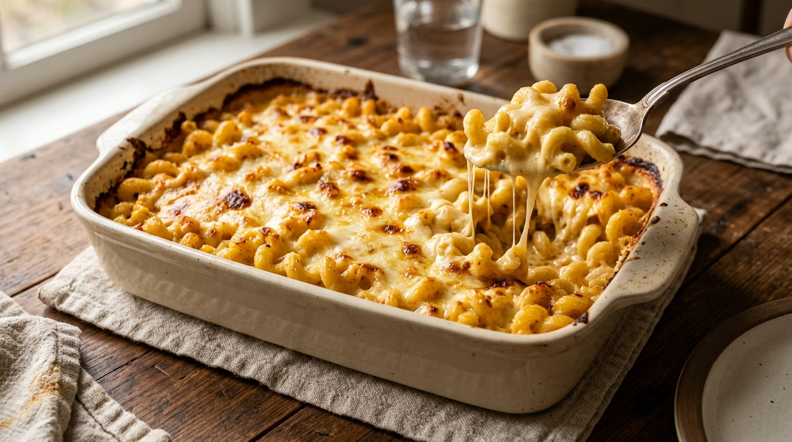

Holiday Side Dish • Scaled 2× Batch (1 lb Pasta)
One-Pot Stovetop Mac & Cheese (Thanksgiving Make-Ahead)
Adapted from Brian Lagerstrom’s “Better” Stovetop Method — scaled for 1 lb cavatappi, medium cheddar, and a make-ahead Thanksgiving baked finish.

Step-by-Step Instructions
0 / 9 done
Part 1 Wednesday Stovetop Base (Make Ahead)
-
Prep & grate all cheeses first
- Freshly grate 250g (2½–3 cups) medium cheddar for the sauce.
- Freshly grate 100g (~1 cup) medium cheddar for Thursday’s topping; bag and refrigerate separately.
- Finely grate 50–60g (~½ cup) aged Parmesan on the fine side of a grater and unwrap 10 slices American cheese.
-
Boil the cooking liquid
- Combine 1,500g (6½ cups) water, 450g (2 cups) evaporated milk, and 12g (2 tsp) kosher salt in a large Dutch oven.
- Bring to a boil over high heat, stirring occasionally so the milk doesn’t scorch.
-
Simmer cavatappi to firm al dente
- Stir in 454g (1 lb) cavatappi, cover, and lower heat to medium.
- Cook covered for 10–11 minutes (just shy of Barilla’s 11–12 min package mark so it finishes tender after reheating), stirring every 2 minutes so nothing sticks.
- Pull from heat as soon as the chalky center is gone and a starchy pool of liquid remains.
-
Melt in the butter
- Turn heat to low and add 100g (7 Tbsp) unsalted butter.
- Stir gently until completely melted into the starchy liquid.
-
Emulsify the cheese sauce
- Keeping heat on low, add 10 slices American cheese (torn), 250g (2½–3 cups) medium cheddar, and 50–60g (~½ cup) Parmesan in two batches.
- Stir constantly until smooth and glossy; taste and season with kosher salt if needed. (Sauce should look slightly looser than normal so it hydrates properly overnight.)
-
Chill overnight
- Transfer to a greased 9×13-inch casserole dish and cool 20 minutes at room temperature.
- Cover tightly with foil and refrigerate overnight (keep the topping cheese off until Thursday).
Part 2 Thanksgiving Day Reheat & Golden Finish
-
Temper & preheat
- Pull the dish from the fridge 30–45 minutes before baking; preheat oven to 350°F (175°C).
-
Loosen & bake covered
- Drizzle 60–120g (¼–½ cup) leftover evaporated milk or whole milk over the pasta and stir gently.
- Cover tightly with foil and bake for 20–25 minutes until hot and bubbling at the edges.
-
Top with cheddar & broil
- Remove foil and scatter the reserved 100g (~1 cup) medium cheddar evenly over the top.
- Broil on High (6–8 inches below element) for 2–3 minutes until melted and lightly browned. Rest 5 minutes before serving.
Tip: Tap any step to check it off as you cook — your progress saves automatically on this device.